语言的通货膨胀：当「爱你」沦为一句谢谢
从日常表达的泛化出发，思考语言如何影响情绪识别、阅读、教育与社会文化生活。
草莓味口气 · 分享喜欢的事物，记录自己的想法。
这里是我的一片自留地，收集那些让我停下来、产生共鸣，或忍不住想继续探究的内容。
我喜欢电影、书籍和音乐，也对历史、文化、社会现象以及日常生活中的细节保持好奇。常常从一部作品、一段故事或一个现象出发，记录自己的感受，也试着追问它们背后的原因。
女性主义是我观察世界的重要视角之一。我希望通过阅读、学习和思考，进一步理解女性的处境、社会规则与权利关系，也在接触不同观点的过程中形成自己的判断。
我不急于给所有问题下结论，也不认为现在的想法就是最终答案。比起停留在熟悉的认知里，我更愿意继续了解、思考，也允许自己在新的认识中改变。
希望这里留下的不只是看过的作品和一时的感受，还有一个人不断认识世界、理解自己时留下的思考。
仅展示最新三篇内容
从日常表达的泛化出发，思考语言如何影响情绪识别、阅读、教育与社会文化生活。
从一句善意的夸奖、青春期的叛逆，到康德关于自律与自由的思想，重新思考我们为什么行动，以及如何拿回选择生活的主动权。
从陈奕迅《葡萄成熟时》出发，聊聊等待、付出、遗憾、爱情的成熟，以及不必按照别人的时间表生活。
我是一个对世界充满好奇，也喜欢亲自去感受生活的人。
我喜欢电影、书籍和音乐，也对许多陌生的事物抱有兴趣。遇到感兴趣的问题，总想弄清来龙去脉；面对不熟悉的领域，也愿意花时间了解和尝试。我不太愿意把生活局限在已有的经验里，总觉得世界上还有许多值得发现的东西。
这种好奇心也让我很喜欢在路上的感觉。无论是工作出差时乘坐飞机、高铁，还是自己出去旅行，我总会留意窗外不断变化的风景。云层、山川、田野、城市与村庄，那些平时未必会特意注意的景色，在旅途中一一经过眼前。它们让我感受到世界真实而具体的样子。对我来说，目的地固然值得期待，前往目的地的路途也同样迷人。
而认识世界，不只是走出去看看，也包括通过阅读和思考理解那些不容易直接看见的东西。女性主义是我逐渐形成的重要立场。成长在一个四口之家，家中包括我在内有三位女性。家人的理解和支持让我较早开始留意女性在家庭与社会中的处境。随着阅读和经历的增加，我希望进一步理解性别、权利与社会结构，也不断审视和完善自己的认识。我是一名女性主义者，也始终相信女性有权利选择自己想要的人生。
生活中还有两只猫咪。它们是重要的家庭成员，也让我体会到另一种简单而纯粹的陪伴。人与人之间的关系有时很复杂，而小动物给予的爱与信任往往直接又真诚。它们也让我发现，生活中有些温暖不需要太多言语，只需要用心感受。
我喜欢笑，也会困惑、犹豫和感动；享受热闹，也珍惜独处。比起按照某种标准生活，我更希望保有自己的节奏，在阅读、行走、体验和思考中不断认识这个世界，也认识自己。
展现一下我可爱的毛茸茸的两位家人。
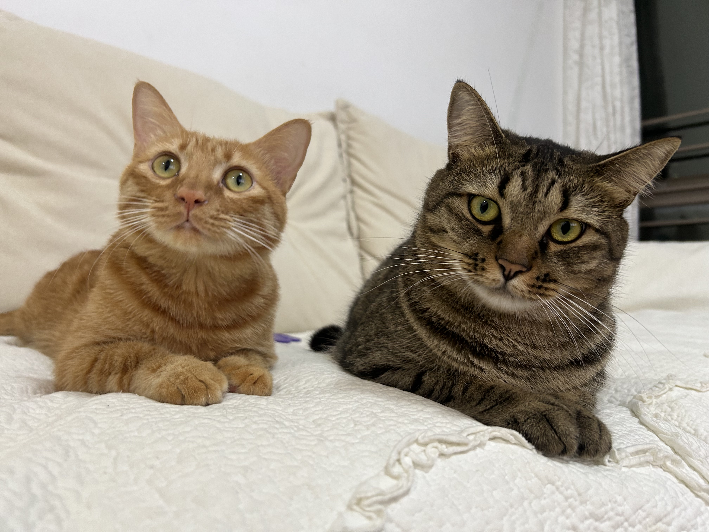
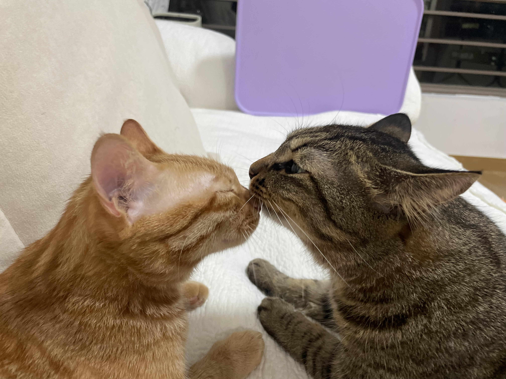
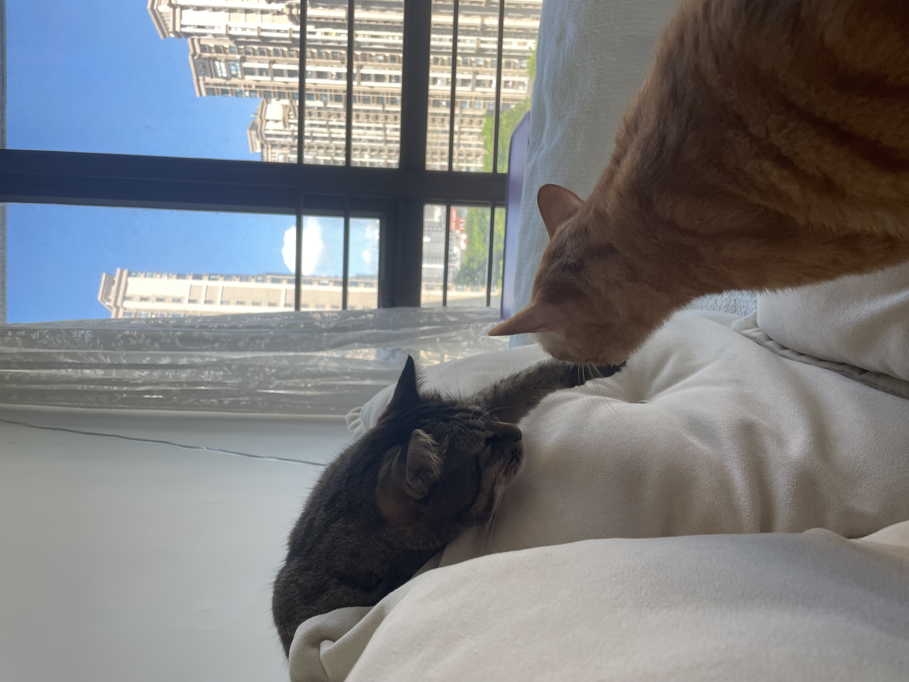
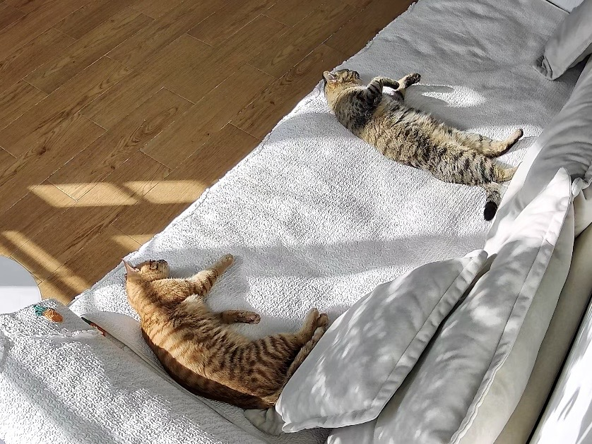
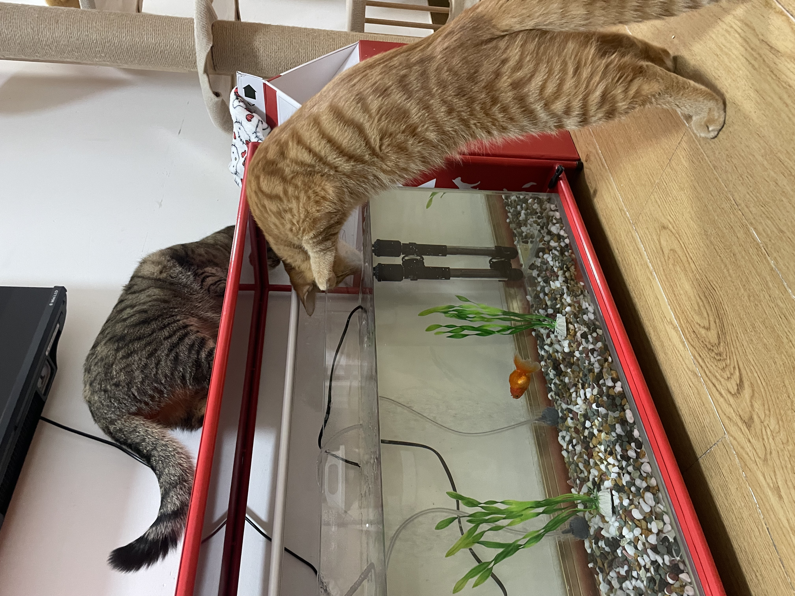
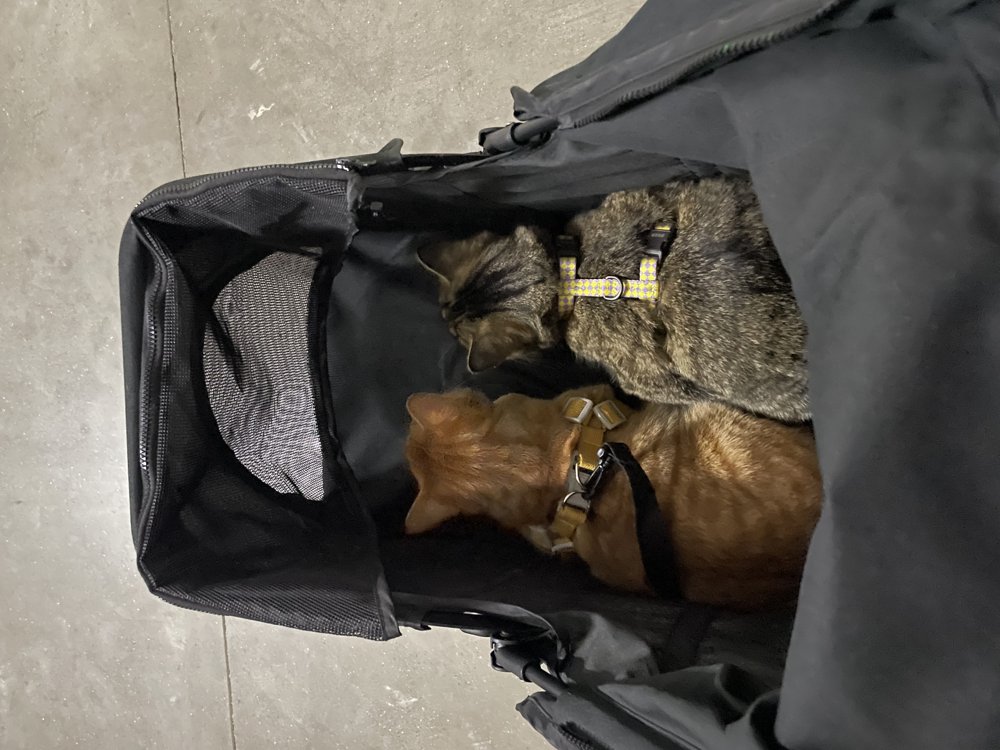
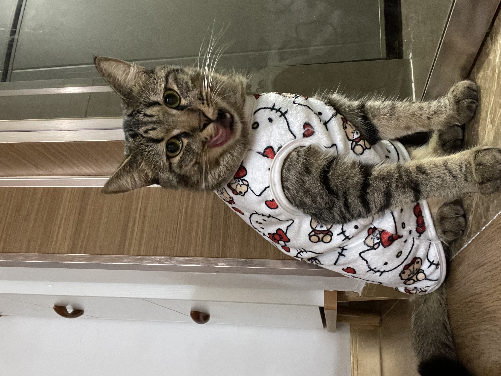
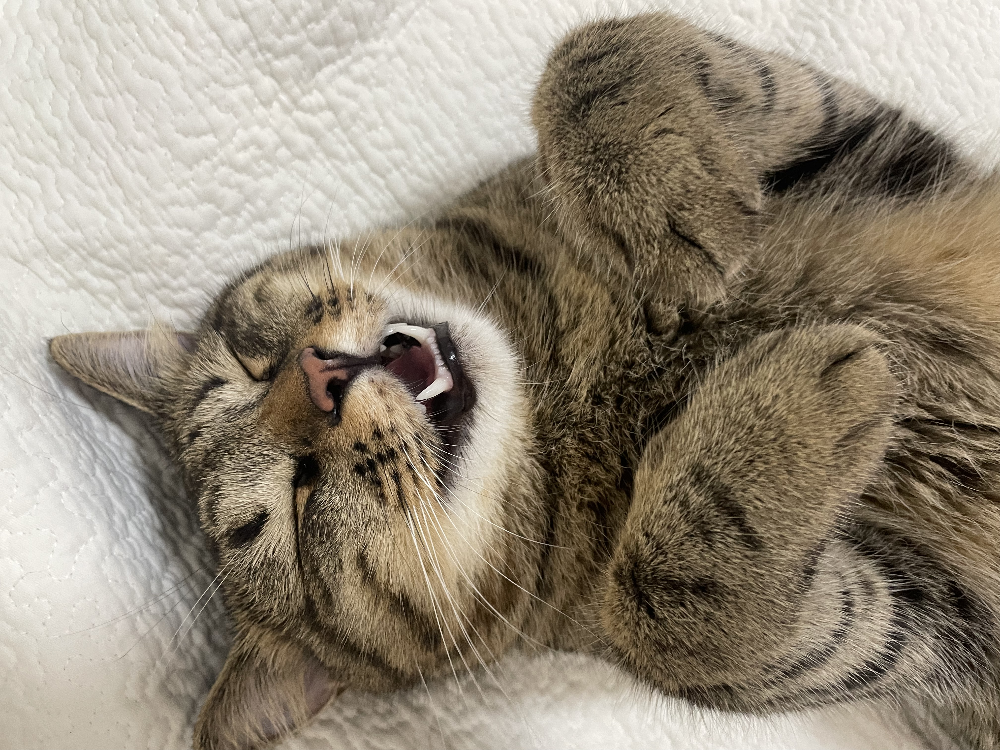
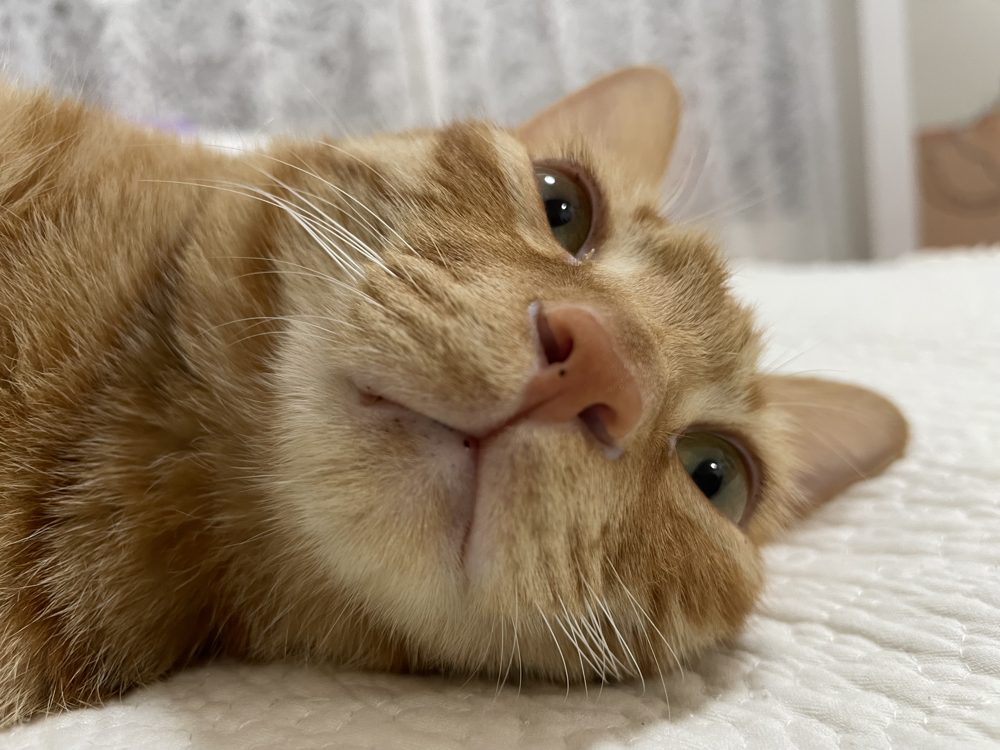
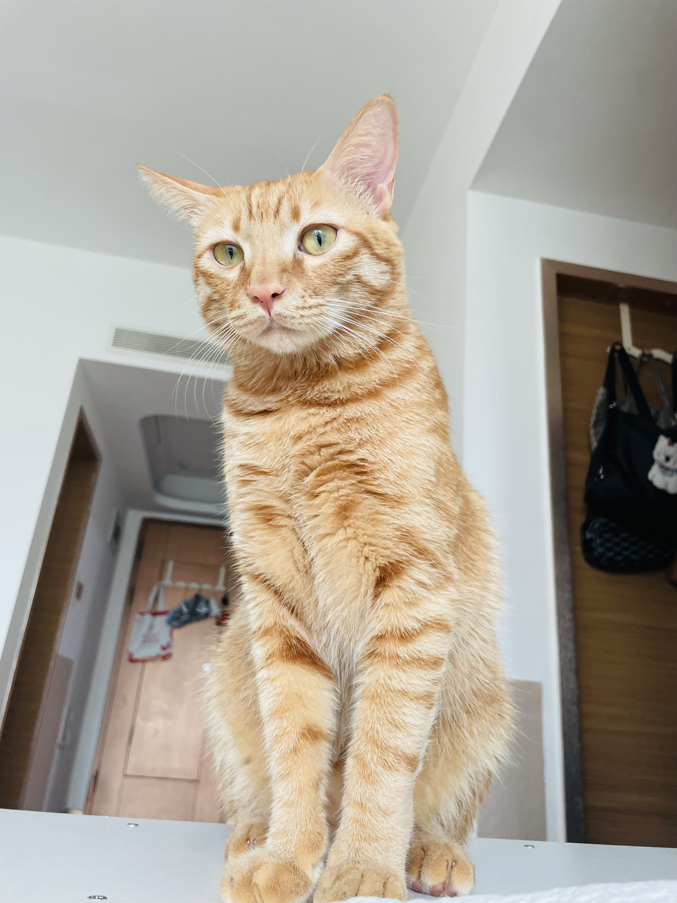
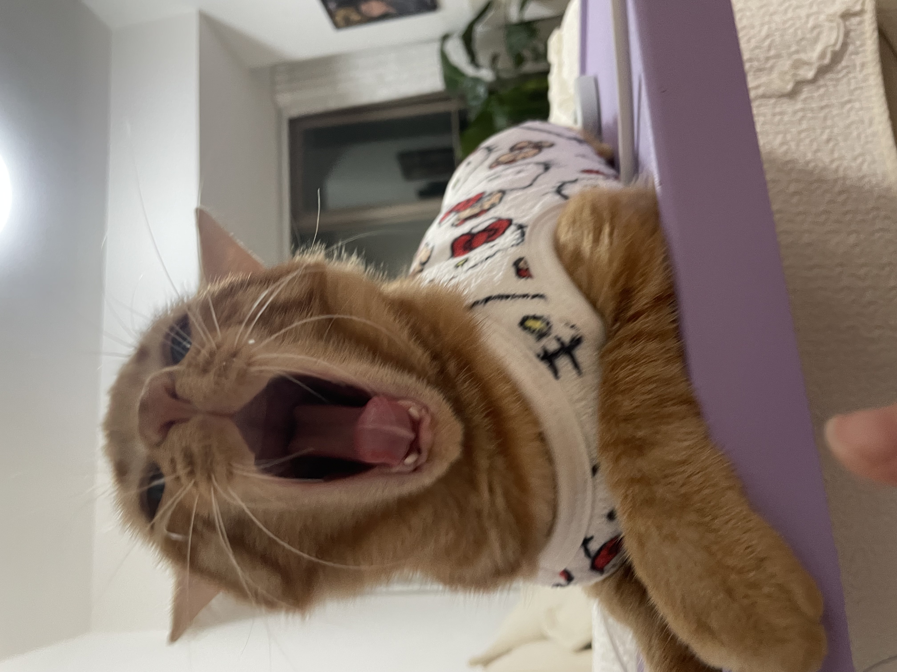
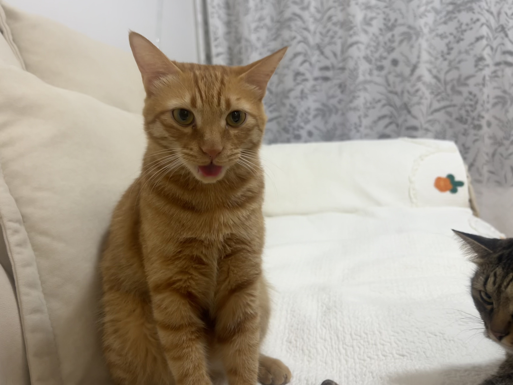
点击箭头可查看更多照片向右滑动，查看更多照片
WHAT I STAND FOR
我是女性主义者。
我认同女性主义，也支持全球女性主义运动。我相信，女性应当拥有平等的权利、自由选择的机会，以及决定自己人生的自主权。
女性不应该被性别刻板印象、婚姻、生育、年龄或社会期待限定人生的边界。每个人都应该能够按照自己的意愿生活，并获得平等的尊重。
我支持女性，也欢迎所有认同性别平等的人一起了解女性主义、关注女性处境，让平等不只停留在口号里。
如果你也想进一步了解女性主义，或希望从不同角度认识女性的处境、权利与行动，可以从下面三个入口开始探索。它们分别提供女性主义相关理念与全球女性议题资料、性别平等倡议行动，以及女性主义阅读与交流的空间。希望这些内容能成为你继续阅读、讨论和思考的起点，也欢迎你从日常生活中的理解、分享与行动开始支持平等。
EXPLORE · LEARN · TAKE PART
女性主义
一种思想立场与社会运动，而不是某个单一组织。
关注女性的权利、处境与自主选择，推动不同性别拥有平等的尊严与机会。
联合国妇女署 · 性别平等倡议
由联合国妇女署发起，倡导男性及所有人共同参与性别平等行动。
Emma Watson 曾于 2014 年在联合国发表演讲，推动这项倡议。
Emma Watson 发起的女性主义读书社群
虽然目前社群更新放缓，但沉淀的书单与讨论数据依然极具借鉴价值。
SAY HELLO
如果你也喜欢阅读、电影，或者对生活中的某些事情有自己的观察，欢迎来和我聊聊。